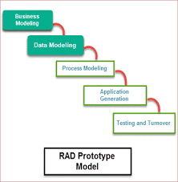

Back
RAD Mudel
RAD (Rapid Application Development) mudel põhineb prototüüpimisel ja iteratiivsel arendusel ilma konkreetse planeerimiseta. Tarkvara kirjutamise protsess ise hõlmab toote arendamiseks vajalikku planeerimist. Rapid Application Development keskendub klientide nõudmiste kogumisele töötubade või fookusrühmade kaudu, prototüüpide varasele testimisele kliendi poolt iteratiivse kontseptsiooni abil, olemasolevate prototüüpide (komponentide) taaskasutamisele, pidevale integreerimisele ja kiirele tarnimisele.
RAD mudeli joonis

Etapid
1. Etapp - Ärimudeli loomine:
Arendatava toote ärimudel kujundatakse info liikumise ja erinevate äriliste kanalite vahel info jaotamise seisukohalt. Tehakse täielik äriline analüüs, et leida äri jaoks oluline informatsioon, kuidas seda saada, kuidas ja millal infot töödeldakse ning millised on edukat infoliikumist soodustavad tegurid.
2. Etapp - Andmemudeli loomine:
Ärimudelite faasis kogutud teave vaadatakse üle ja analüüsitakse, et moodustada ettevõtte jaoks elutähtsate andmeobjektide komplektid. Kõikide andmekogumite atribuudid on tuvastatud ja määratletud. Nende andmeobjektide vaheline seos luuakse ja määratletakse üksikasjalikult ärirajatisele vastavalt.
3. Etapp - Protsessimudeli loomine:
Andmemudelis määratletud andmeobjektide komplektid teisendatakse, et luua ärilise teabe voog, mis on vajalik konkreetsete äriliste eesmärkide saavutamiseks vastavalt ärirajatisele. Selles etapis määratletakse andmeobjektikomplektide muudatuste või täienduste protsessimudel. Antakse andmeobjekti lisamise, kustutamise, toomise või muutmise protsesside kirjeldused.
4. Etapp - Rakenduste genereerimine:
Tegelik süsteem on ehitatud ja kodeerimine toimub automatiseerimistööriistade abil, et teisendada protsessi- ja andmemudelid tegelikeks prototüüpideks.
5. Etapp - Testimine ja käivitamine:
Üldist testimisaega vähendatakse RAD-mudelis, kuna prototüüpe testitakse iga iteratsiooni ajal iseseisvalt. Andmevoogu ja kõigi komponentide vahelisi liideseid tuleb siiski põhjalikult testida, hõlmates täielikku testi. Kuna enamik programmeerimiskomponente on juba testitud, vähendab see suuremate probleemide riski.
Plussid
-
Vähendab arendusaega.
-
Hõlbustab klientide tagasisidet ja lõpptoode rahuldab kõiki sidusrühmi.
Miinused
-
See sõltub kogenud arendajate/disainerite meeskonnast.
-
Nõuab tugevat meeskonda ja individuaalseid esitusi.